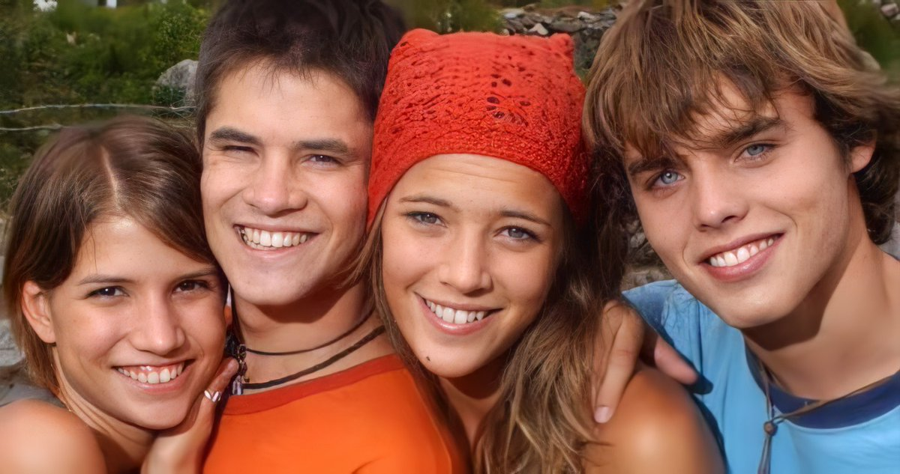
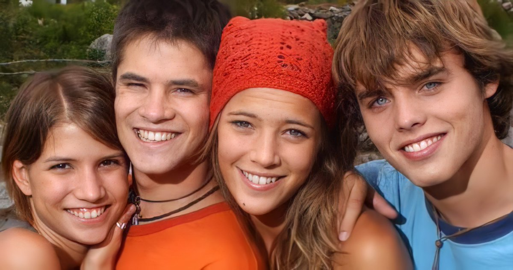

ERREWAY: 4 CAMINOS
Quatre adolescents decideixen abandonar les seves vides de luxe i comoditat
per
llançar-se a les rutes argentines buscant un somni, ser reconeguts
per la seva música.
·Adaptació de: Rebelde Way
·Duracció: 100 minuts
·Any: 2004
·Idea: Cris Morena
·Direcció: Ezequiel Crupnicoff
·Producció: Tomás Yankelevich
Director
Ezequiel Crupnicoff és un director de cinema argentí, del qual no se sap més que del seu treball. Principalment, Crupnicoff, és assistent de direcció, director, ajudant de direcció i productor executiu. Va exercir de director i productor en varies películ·les com: "Amor a mares; The die is cast"; "Francis: Pray for me", i "Solo se vive una vez", entre altres.
Personatges
Mia Colucci és una noia presumida i capritxosa a qui li agrada escriure
cançons i vestir bé. Però més enllà de tot, volia transcendir, deixar alguna
cosa que perdurés en el temps, com si busqués una forma absurda d'immortalitat.
Manuel Aguirre és un noi mexicà que amb només 17 anys va viatjar fins
a Argentina per estudiar. Era diferent, ja que era l'únic que vivia sol,
l'únic que no deixava ningú enrere, per això en realitat, allò que ell
secretament buscava en aquest viatge, era una família.
Pablo Bustamante és fill de l'intendent de la ciutat de Buenos Aires,
Sergio Bustamante. Tot i semblar corrupte i voler guanyar tot a qualsevol
preu (igual que el seu pare), ell realment és un apassionat per la música,
professió a què el seu pare s'oposa. Tot i que era el que tenia més clar
els motius d'aquest viatge, buscava sentir-se lliure i viure noves experiències
Marizza Pia Andrade és filla de Sonia Rey, la vedette més
important del país, per això sent que la gent no la veu pel que ella és
sinó pel que és la seva mare. Està en contra de les injustícies i lluita
amb qui sigui per defensar els seus amics, odia la gent presumida i que
es creu més pels diners que té. Es feia la dura però no era més que una posse, cantava per sentir-se forta,
protegida, d'alguna manera, per a ella, la música era un refugi.
Benito és el conductor de la caravana que utilitzen a tot el viatge.
Sempre sembla tenir alguna cosa per explicar, en realitat ningú sabia si
creure'l o no però escoltar-ho era divertit. Ell va decidir emprendre
l'aventura per representar-los com a banda i així poder viure aquell somni
que mai no va poder complir de viatjar pel món vivint de la música.
S'explica la història de quatre ànimes soles que decideixen triar
el seu camí i anar a buscar un destí incert.
En definitiva, tots buscaben el mateix, poder viure de la música.
Durant tota la pel·lícula transmeten la seva passió i les ganes
de viure la vida intensament, encara que hi hagués molts obstacles
pel camí.
"Todo pasa y todo queda,
Nada es fácil pero llega
Arriesgamos, el presente es hoy"
(Erreway, De aquí de allá)
Plataformes
| Tipus | Plataforma | Preu | Valoració |
|---|---|---|---|
| YouTube | Gratis | 9/10 | |
| Online | Dailymotion | Gratis | 4,4/10 |
| Online | Internet Archive | Gratis | 8/10 |
Media
 


.jpg)


Curiositats
·La pel·lícula va ser gravada a Salta, una ciutat al muntanyós nord-oest argentí. Es va decidir gravar en aquests paisatges desertics perquè tenen a veure una mica amb l'ànima de cadascun, que està una mica confusa i desolada. I en aquest lloc tan solitari es trobaran.
·El rodatge va durar aproximadament tres mesos.
·Aquesta és una història paral·lela a la novel·la
"Rebelde Way", ja que pren com a base els seus
personatges principals, però no es té en compte el que ha passat en
aquesta.
Tenien pensat fer una tercera temporada de la sèrie, però com que els
actors estaven física i mentalment esgotats del ritme de treball de
gravar i fer concerts, els hi van donar l'opció de la pel·lícula,
donant un fermall final a l'etapa.
·Encara que a la sèrie, Pablo i Marizza acabaven junts, a la pel·lícula no es
donen l'oportunitat fins a les últimes escenes.
·Passa el mateix amb Mia i Marizza. A la novel·la compleixen anys el mateix dia. Això es dóna en un capítol on celebren la seva festa juntes... En canvi a la pel·lícula, Marizza fa anys, però Mía no
·Per poder interpretar l'escena del part, Luisana Lopilato, qui interpreta a Mia Colucci, va haver de veure un enregistrament d'una dona donant a llum. D'aquesta manera va saber transmetre totes les sensacions.
·"Memòria": El tercer àlbum d'estudi de la banda Erreway. Inclou les cançons de la pel·lícula. És considerat pels fans el millor disc i es podria dir que l'estil d'aquest disc és més aviat rock, amb alguns ritmes nous com es pot escoltar al tema "Dame". La balada "Que se siente", tercer tall de difusió, es va convertir en un clàssic, que fins avui continua sonant a les ràdios. Un disc madur, on el grup demostra la seva unió, tant humana com a musical. Enregistrat després de dos tours internacionals, els quatre membres demostren tota la potència i les veus treballades i polides amb què van arribar a aquest treball.
·Erreway viatja novament a Israel per tocar les cançons dels seus disc
"Señales" i "Tiempo". A més, durant la gira, presenten "Memòria".
La banda, juntament amb el cast de la sèrie, va realitzar 12 shows a
l'Estadi Nokia Sport Center, igual que al Tour Israel 2003, davant més
de 10.000 persones. Després de l'èxit que van aconseguir, es va decidir
treure el tercer àlbum però amb una portada especial per a Israel.
·Al tracklist del disc hi anava a haver la cançó "Flores Amarillas", de la sèrie gravada el mateix any, "Floricienta". Tenia com a títol "Él la estaba esperando", però a últim moment va ser totalment decartada.
·La cançó "Que se siente" va ser escrita per l'actor Benjamin Rojas. Va ser un pas
molt important a la banda, ja que en els anteriors discos no els hi van deixar
formar part de la composició. A més, és una de les preferides, perquè es rumoreja
que està dedicada a la seva companya, Camila Bordonaba, amb qui va tenir un
idil·li fora de la pantalla.
·Com que a Espanya la sèrie va arribar el 2006, dos anys després del seu final,
no es va poder arribar a posar la pel·lícula en cinemes. Per aquesta raó, es va
fer un pack especial que contenia el dvd juntament amb diferents productes de
la sèrie.